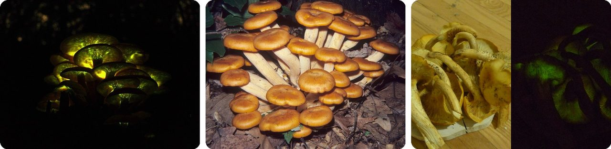
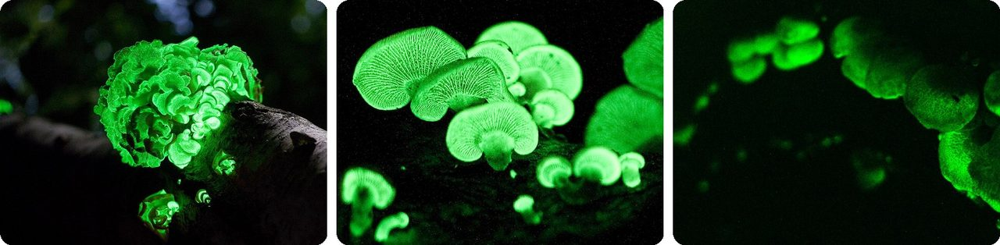
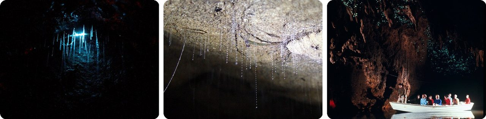
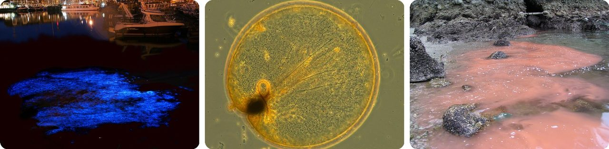
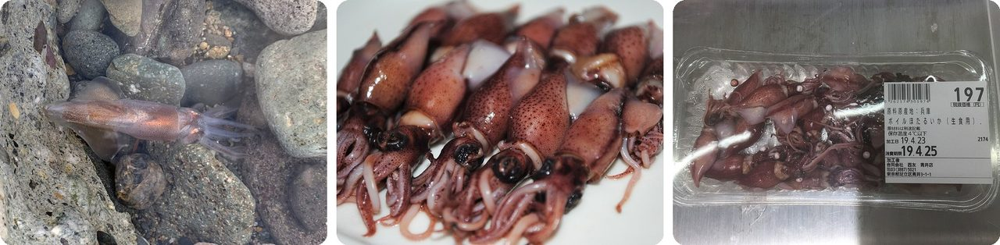
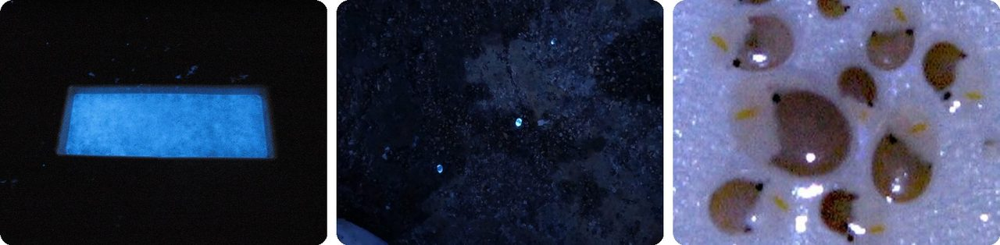
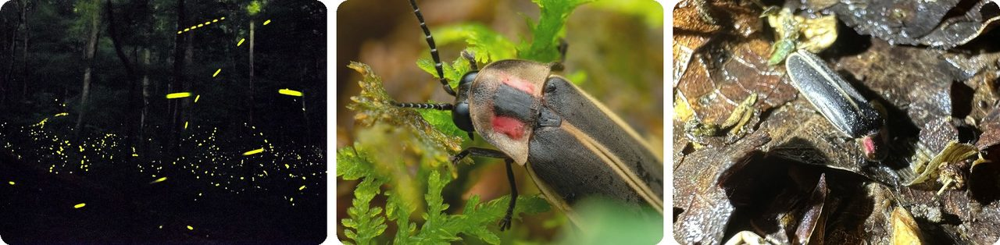
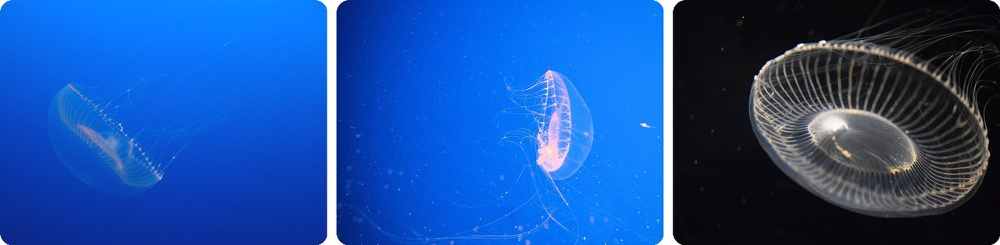
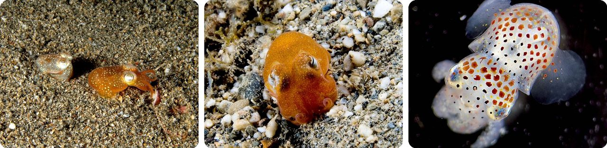
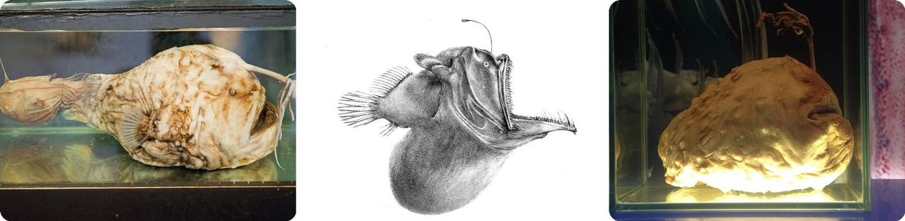

🌍 Top 10 Spooky Bioluminescence
Oct 31, 2026
1. 🎃 The jack-o'-lantern mushroom really does glow

The eastern jack-o'-lantern mushroom grows in bright orange clumps on old stumps and buried roots across eastern North America, from June to November. So it's out just in time for Halloween.
Turn off the lights and its gills (the thin flaps under the cap) give off a weak green glow. An enzyme called luciferase works on a compound called luciferin, and that reaction makes light, much like in a firefly. The glow can keep going for 40 to 50 hours after the mushroom is picked.
Don't let the cute name fool you. People mix it up with tasty chanterelles, but it's poisonous: a toxin called illudin S causes bad cramps, vomiting and diarrhea.
It's a jack-o'-lantern that lights itself, and you really shouldn't eat it.
2. 🇺🇸 Glowing wood once lit the dials of a submarine

Foxfire is the bluish-green glow of certain fungi living in rotting wood. People noticed it long ago: Aristotle wrote about it in 382 B.C. as a light that, unlike fire, was cold to the touch.
In 1775, during the American Revolution, David Bushnell built Turtle, a one-man submarine. To read his instruments in the dark, he stuck small bits of foxfire on the needles of the compass and of a pressure gauge called a barometer.
And here's the twist. In November 1775 it got cold, and the foxfire stopped glowing. Bushnell asked Benjamin Franklin for another light source, Franklin had no answer, and Turtle sat out the winter.
Basically, a night-light grown on rotting wood that quits when it gets chilly.
3. 🇳🇿 New Zealand glowworms go fishing with glowing sticky lines

These "worms" are actually the young (larvae) of a small fly called a fungus gnat, and they live only in New Zealand. Each one hangs up to 30 silk threads from a cave ceiling, dotted with sticky droplets like beads on a necklace.
Then it switches on its blue-green light. Small flying bugs like midges head for the glow, get stuck on a thread, and the larva reels them up by eating the line. The light comes from the end of its waste-filtering tubes, the bug version of kidneys.
In the Waitomo Glowworm Cave, visitors glide in a boat under a ceiling full of them. The first explorers, local Māori man Tane Tinorau and surveyor Fred Mace, floated in on a raft by candlelight in 1887.
Think of it as a fishing line that uses a night-light for bait.
4. 🌊 Sea sparkle makes crashing waves glow blue

Sea sparkle (Noctiluca scintillans) is a single living cell just 0.4 to 1.5 mm across, about the size of a grain of sand. It can't really swim, so it drifts wherever the water takes it. Its Latin name means "light at night, throwing out flashes."
It only lights up when it gets squished. A wave, a boat or a splash bends the cell → that sends an electric signal inside → acid floods tiny light pockets → the acid switches on the glow chemicals. That's why the blue flashes appear right where waves break.
When huge numbers of them bloom at once, the water can turn reddish by day (a "red tide"), then sparkle blue at night.
In other words, the ocean has a "squeeze to glow" button.
5. 🇯🇵 Firefly squid light up Toyama Bay every spring

The firefly squid is only about 7.5 cm long, about the length of your finger. Its belly is covered with 800 to 1,000 tiny lights, with five more around each eye and three bright ones at the tip of each of two arms.
It spends the day 300 to 400 m deep, about as deep as the Eiffel Tower is tall, then rises at night to hunt. Each spring, at the end of their one-year lives, females swarm into Toyama Bay in Japan to lay eggs, and the bay twinkles blue.
That glow brings both tourists and fishers. In the 1990s, Japan caught about 5,000 to 7,000 tons of these little squid a year, called hotaru-ika ("firefly squid").
It's a squid wearing a suit of fairy lights.
6. 🇯🇵 Soldiers read maps by the light of dried sea fireflies

The sea firefly is a tiny crustacean (a cousin of shrimp and crabs) just 3 mm long, about the size of a sesame seed. It lives in the sand of shallow water off southern Japan and comes out at night to feed.
To glow, it squirts glow chemicals from a gland on its upper lip, and the water around it flashes bright blue. Part of this reaction works the same way as the chemistry inside a glow stick.
During World War II, the Japanese army sometimes used dried sea fireflies as a light source. Their dim glow was just enough to read a map without being easy to spot.
Basically, a flashlight made of tiny dried-up shrimp cousins.
7. 🇺🇸 Smoky Mountain fireflies blink in perfect sync

Most fireflies flash on their own schedule. But for about two weeks each June, near Elkmont, Tennessee, in the Great Smoky Mountains, males of one species flash together. It was the first North American firefly found doing this.
Each male gives 4 to 8 quick bright flashes over 2 to 4 seconds, then goes dark for 8 to 12 seconds. Scientists think the shared dark break helps: it gives males a quiet moment to spot a female's dimmer reply from the ground.
The show is so popular that visitors park at a visitor center and ride a trolley in. In early June 2011, more than a thousand people came each night.
Think of it as a stadium crowd doing the wave, then all going quiet to listen.
8. A glowing jellyfish led to a Nobel Prize

The crystal jelly is an almost see-through jellyfish from the west coast of North America. Around the rim of its bell, one protein makes blue light when it meets calcium, and a second protein, called GFP (green fluorescent protein), soaks up some of that blue and gives off green.
To study it, scientist Osamu Shimomura collected about 1 million jellyfish near Friday Harbor, Washington, between 1961 and 1988.
Later, scientists learned to put the GFP gene into bacteria, yeast, fish and even human cells, so those cells glow green and can be tracked under a microscope. In 2008, Shimomura, Martin Chalfie and Roger Tsien won the Nobel Prize in Chemistry for this work.
In other words, a jellyfish gave science its favorite highlighter.
9. 🇺🇸 The Hawaiian bobtail squid hides its shadow with glowing bacteria

This squid is only about 3 cm long and lives in shallow water off Hawaii. It can't glow by itself, so it hires help: glowing bacteria living in a special light organ inside its body.
Here's how. A newly hatched squid makes sticky mucus that catches bacteria from the seawater → only one kind gets through its defenses → within 10 to 12 hours, the light organ is full. The squid feeds them sugar and building blocks of protein, and in return they glow to match the moonlight coming down from above, so a hunter looking up sees no squid-shaped shadow.
Every morning at dawn, the squid dumps up to 95% of its bacteria, maybe to save energy during the day while it hides.
It's an invisibility cloak powered by tiny tenants.
10. 🎣 Deep-sea anglerfish fish with a glowing lure on their heads

An anglerfish has a fishing rod growing out of its head: the front spine of its back fin, which it can move. In the deep-sea kinds, the tip of that rod is filled with glowing bacteria, a bright bait in water that's pitch black.
The fish wiggles the lure with its own muscles so it looks like a little animal. Curious prey swim closer, and the anglerfish snaps them up. Its jaw and stomach can stretch so far that it can swallow prey up to twice its own size.
And the strangest part: deep-sea males are tiny. Some bite onto a female and fuse to her body for good; in one species the male is only about 7 mm long.
Picture a fishing rod with a flashlight on the end, attached to a giant mouth.
Fun fact
The green glow protein from the crystal jelly in entry 8 ended up in your local pet store. In 1999, scientists in Singapore put the jellyfish gene into zebrafish, hoping to build a fish that would light up when the water was polluted. Those glowing fish went on sale in the US in late 2003 as GloFish, one of the first genetically modified animals sold to the public, and California banned them until 2015. Animals that glow under a black light, a different trick from making their own light, could be a bright theme to explore next.
Photo credits (Wikimedia Commons)
- #1: 081224 Jack O' Lantern NC.jpg by Tylerbrunnermyco, CC BY-SA 4.0
- #1: Omphalotus illudens 78007.jpg by This image was created by user walt sturgeon (Mycowalt) at Mushroom Observer, a source for mycological images.You can contact this user here., CC BY-SA 3.0
- #1: Glowing Jacks.png by KeithMiklas, CC BY-SA 4.0
- #2: PanellusStipticusAug12 2009.jpg by Ylem, Public domain
- #2: PanellusStipticusJuly5 2010 cropped.jpg by PanellusStipticusJuly5_2010.jpg: Ylem derivative work: Ak ccm (talk), Public domain
- #2: PanellusStipticusAug11 2008.jpg by Ylem, Public domain
- #3: Nz glowworm.jpeg by No machine-readable author provided. Markrosenrosen assumed (based on copyright claims)., CC BY-SA 4.0
- #3: Arachnocampa luminosa larvae.jpg by Mnolf, CC BY-SA 3.0
- #3: Glowworm Grotto, Waitomo Glowworm Cave.jpg by Michael Willison, CC BY 2.5
- #4: Noctiluca scintillans.jpg by Hans Hillewaert, CC BY-SA 4.0
- #4: Noctiluque (Noctiluca scintillans) (Ifremer 00689-80077).jpg by Nadine Neaud-Masson, CC BY 4.0
- #4: Algal bloom(akasio) by Noctiluca in Nagasaki.jpg by Marufish, CC BY-SA 2.0
- #5: Watasenia scintillans 002.jpg by iNaturalist user: kamataryo, CC0
- #5: Boiled firefly squids (2014.03.19).jpg by Lombroso, CC BY-SA 3.0
- #5: Firefly squid for sale - Tokyo area - April 24 2019.jpeg by Nesnad, CC BY 4.0
- #6: Vargula hilgendorfii glowing.jpg by User:Almandine, CC BY-SA 3.0
- #6: Vargula hilgendorfii · 因島三庄町九区, 尾道市, 広島県, JP by (c) りなべる, some rights reserved (CC BY), CC BY
- #6: Vargula hilgendorfii.jpg by self, CC BY-SA 3.0
- #7: Photinus carolinus Great Smoky Mountains.jpg by Niemand für Polyphemus, CC BY 2.0
- #7: Photinus carolinus · Sevier, Tennessee, United States by (c) Zachary Dankowicz, some rights reserved (CC BY), CC BY
- #7: Photinus carolinus · Creston, Creston, NC, US by (c) Kim H, some rights reserved (CC BY-SA), CC BY-SA
- #8: Aequorea victoria.jpg by Mnolf, CC BY-SA 3.0
- #8: Crystal Jelly ("Aequorea Victoria"), Monterey Bay Aquarium, Monterey, California, USA.jpg by Jim G from Silicon Valley, CA, USA, CC BY 2.0
- #8: Hubcap (26488480025).jpg by incidencematrix, CC BY 2.0
- #9: Euprymna scolopes (Bobtail squid).jpg by Nhobgood Nick Hobgood, CC BY-SA 3.0
- #9: Euprymna scolopes (Bobtail squid in orange form).jpg by Nhobgood Nick Hobgood, CC BY-SA 3.0
- #9: A squid in the starry night.jpg by Lilasnoow, CC BY 4.0
- #10: Himantolophus sagamius (Football Fish).jpg by mark6mauno, CC BY 2.0
- #10: MelanocetusJohnsoniiFord.jpg by G. H. Ford, Public domain
- #10: Prickly anglerfish.jpg by Canley, CC BY-SA 3.0


_(Ifremer_00689-80077).jpg){kind=link}
_by_Noctiluca_in_Nagasaki.jpg){kind=link}

.jpg){kind=link}


,_Monterey_Bay_Aquarium,_Monterey,_California,_USA.jpg){kind=link}
.jpg){kind=link}
.jpg){kind=link}
.jpg){kind=link}

.jpg){kind=link}